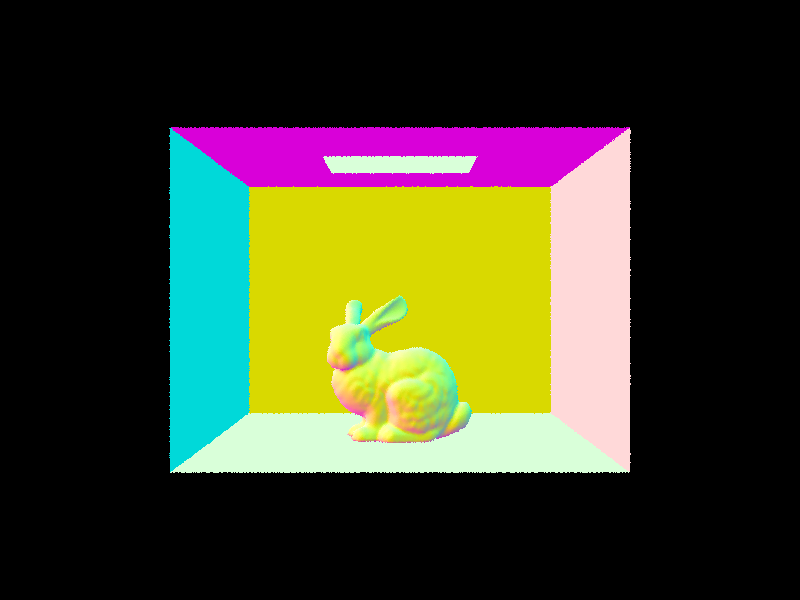
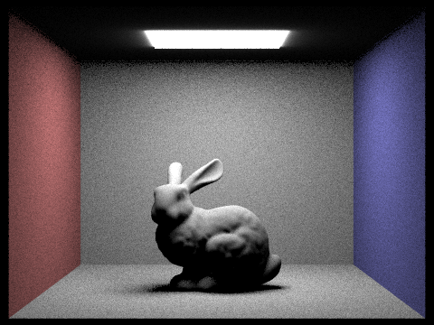

In this project, I experimented with a lot of raytracing techniques to render realistic looking scenes. The process was quite long and complicated but the results were really great! I started by implementing a simple perspective transformation to create rays between camera space and world space and used Monte Carlo sampling to trace these rays and approximate the desired color for each pixel. To render basic shapes, I implemented intersection tests that determined if the ray had hit an object (triangle or sphere) which should be rendered in the foreground. From there, I improved on my initial intersection detection by implementing a BVH tree structure to store the list of primitives so that rather than performing intersection tests with every object, I could instead traverse the tree and only test a smaller subset. After implementing proper intersection, the next part of the project focused on generating light rays and creating realistic lighting in the scenes. I started with zero-bounce light which simply detected whether the camera ray intersected a light emitting object. Then, I implemented one-bounce radiance which measured the amount of light at the point of intersection between the ray and the primitive it intersected, based on how much light from a light source had hit that point and how much of that original light got reflected to the camera ray direction. Since there were many possible ways that the intersection point could have received light from other light rays, I implemented Monte Carlo sampling to sample different one-bounce ray directions. I started with a simple uniform hemisphere sampling method that just sampled all possible bounces off of the point's surface and then modified this to an importance sampling method that focused sampling efforts on the light sources' rays intersecting with the point. After implementing one-bounce, I had a nice direct lighting visualization but to add in realistic scene lighting, I also incorporated global lighting by implementing a recursive method that extended the one_bounce case to (possibly) infinite bounces (though here I used a finite depth and probabilistic stopping with Russian Roulette). After implementing this, I was able to render very realistic looking scenes where colors on the walls lightly reflected on the primitives as we would expect in a real scene. Finally, for the very last part of the project, I improved on the sampling efficiency by modifying the original ray tracing sampling to use adaptive sampling, which stopped sampling once the pixel that the ray was pointing to in the scene had already converged. This made the rendering a lot more efficient and allowed rendering of images with much higher samples that had a better Monte Carlo estimate of the true pixel value.
Part 1: Ray Generation and Intersection
Ray Generation Walkthrough: For ray generation, I began by taking the input
pixel coordinate in the image space and creating a transformation matrix that converted
from 2D pixels in the xy-coordinate of image space to 2D pixels in the xy-coordinate along
the z=-1 plane of camera space. This was achieved by adding a homogeneous coordinate of value 1
and constructing two 3x3 transformation matrices that performed (1) a translation by (-0.5, -0.5) and (2) a
scaling of 2 and a scaling by the tan(0.5 * field of view). The first scaling of 2 was to
make each scene corner map to 1 (rather than 0.5 after the shift) and then the tan(0.5 * field of view)
scaling appropriately scaled it to the desired camera field size. Once it was correctly mapped
along the xy-dimension, I simply updated the z-coordinate of the homogeneous coordinate from 1
(which was necessary for my transformations) to z=-1 to match the actual position in camera space.
After creating this desired mapping and finding the corresponding point in camera space, I converted
back to the world space position by multiplying with the given c2w matrix and then normalizing the
resulting vector. Using this, I was able to create my ray by using the pos variable as the origin and
the calculated vector as my direction.
Raytracing walkthrough: For raytracing, I followed the directions and pretty much just
had a for loop over the number of samples, and for each sample, I calculated a random vector, added these
random coordinates to the provided (x,y) point, normalized these points against the width and height, and then
generated a ray to that point. Using the resulting ray, I calculated the estimated global illumination
radiance and averaged this value across all samples to get a Monte Carlo estimate of the desired
pixel value at the point (x,y).
Triangle Intersection: To perform triangle intersection, I followed the Moller Trumbore outline
discussed in class to calculate the time and barycentric coordinates for the ray intersection with the triangle.
Using the time calculated from the equations, I determined whether it was between the ray's minimum and
maximum t to see if the ray could intersect the triangle's plane. And then if this was true, I checked
once more that the barycentric coordinates for b1, b2, and b3 were valid (all within 0 and 1). Once
ray intersection was verified, calculating the point of intersection was pretty simple. Since I already
had the barycentric coordinates, I could easily calculate the point and normal vector at the intersection by
using the barycentric coordinates in a weighted sum of the vertex point and vertex normals.
Sphere Intersection: For sphere intersection, I once again calculated the ray and sphere intersection
equation by determining the appropriate quadratic equation coefficients and solving for the (up to) two solutions
of t where the ray and sphere intersected. I performed the same checks to determine whether the t was valid
for first the closer t, and if not, the farther one. If at least 1 t-value was valid, I used it to
calculate the point of intersection using the ray equation with the desired t and simply found the
normal vector by taking the difference between the intersection point and the sphere's origin.
Example Images:
|
|

|
|

|

|
Part 2: BVH
BVH Construction Algorithm: My BVH construction closely followed the provided algorithm in lecture. I began by creating a bounding box using all the provided primitives to the function from start to end. This created one large bounding box that enclosed all primitive elements that would appear in leaves of that node's (sub)tree. While iterating and constructing the expanded bounding box, I also counted the number of elements. At the end, if the number of elements was <= max leaf size, I created a leaf node by assigning the bbox, start, and end to the node created and returning it. If the number of primitives exceeded max leaf size, the node would be an inner node. To create the two leaf subchildren, I first determined my split criteria by taking the difference between max and min coordinates of all centroids along every dimension (x, y, z) and finding the largest difference. For the dimension with the largest difference, I found the midpoint and split all the primitives based on their centroid falling either left or right of the midpoint. To split them on either side, I used the partitions function with the axis split point as the predicate. Once I determined the split, I made two recursive calls to the function on the new split regions of the primitive list for each half to create the left and right subtrees of the BVH. To handle the edge case where all primitives were assigned to one child, I simply assigned two primitives to the right leaf node and the rest to the left.Images:
|
0.002 sec primitives 0.002 sec building BVH 0.04 sec rendering |
0.02 sec primitives 0.03 sec building BVH 0.07 sec rendering |
|
0.03 sec primitives 0.04 sec building BVH 59.16 sec rendering |
0.04 sec primitives 0.03 sec building BVH 82.5 sec rendering |
See note at the end of this section but the actual updated times for CBdragon was 0.1sec of building BVH and 2s of rendering, while CBlucy was 7s of rendering and 0.1 sec of building the BVH.
Comparing Results of BVH: In the following table, I display the results of the BVH algorithm in speeding up rendering times. We can see that in general, the speedup is at least 10x the non-BVH structure, which shows that there is a significant difference in rendering time when we only need to search through a small set of primitive elements to determine ray intersection. For the simple cow rendering, BVH sped up the render speed from 27.7 seconds to a fraction of a second. For the longer medium-difficulty renderings, the coil had a speedup of about 37x from 37.7 seconds to 1.65 seconds and the bunny had a speedup from 145 seconds too 14 seconds. In all of these cases, we can see that the BVH structure significantly improved performance.
| Img | w/o BVH | w BVH |
|---|---|---|
| Cow | 27.6823s | 0.04s |
| Coil | 37.6550s | 1.5351s |
| Bunny | 145.2982s | 14.4302s |
(Note: I typed up the above sections and times while I was working through each part but I actually found a bug in my original BVH implementation after reaching the end of part 3 which was causing the BVH to incorrectly create leaf nodes too early. After fixing it, I've rerun the experiments to get better results but I'm not sure how accurate they are since, as mentioned before, I had already added other implementation for direct and global lighting which in and of themselves will have a slight effect on rendering time. There were quite a few fixes that I made to the BVH functions so I couldn't exactly extract them easily and revert to my state after part 2 and only rerun those. But the updated numbers are: 0.003 sec to build BVH and 0.12s to render for cow, 0.005 sec to build BVH and 0.23s to render for coil, and 0.02 sec to build the BVH and 0.078 seconds to render for bunny. I've kept the original analysis above bc I still think everything I said was true regarding the speedup, it just happened to be a lot more than I originally anticipated. Also, all of these times were run on my personal computer.)
Part 3: Direct Illumination
Direct Lighting Implementation:Uniform hemisphere sampling: To estimate the direct lighting using uniform hemisphere sampling, I began by iterating over num_sample elements where I sampled from the hemisphere sampler to get a vector sample in one of the outgoing bounce directions (any vector leaving the surface at any angle). Using this sampled vector, which was given in object space, I converted it to world space in order to create the light ray which would be used to determine intersection in worlds space. This ray began at the p_hit mark (which is where the camera originally hit the surface) and exited out in the direction that was sampled. For this ray, I then used my BVH structure to detect if there was any intersection between the ray and any object (hopefully a light source). I made sure to also set the minimum of the ray's timestep to be EPS_F in order to prevent accidentally marking an intersection with its own surface that it started on. If there was an intersection, I used the BSDF of the intersection's surface to retrieve the amount of light emission coming from the intersected object. Using this light emission value, I could then calculate the reflection equation by using the diffuse material reflection property I implemented in task 1 to measure the amount of light reflected from the bounce surface at point p and also calculated the angle of intersection by taking the angle of the light (in object space, since this should be in relation to the bounce surface object's normal vector) against the normal vector pointed directly upward at (0, 0, 1). Using all of these values, I plugged it into the equation by multiplying the light, diffuse material reflection value, and cos of the light angle while dividing by the probability of the sample (which is 1/2pi since it is uniform over the surface area of the hemisphere). Once this was calculated, I had the value of light reflection from one sample. Doing this in a for loop over num_samples gave me enough samples for the Monte Carlo estimate and I ended by dividing by the total number of samples to get the average reflected light.
Importance Sampling: For importance sampling, I began by focusing on the light sources which were provided in scene->lights and I iterated over all the lights to create a Monte Carlo estimate for each light source. If the light was a point light, I only did one sample (for efficiency according to the spec) and for normal lights I sampled num_sample elements. For each sample of a light source, I followed a similar process to the implementation for uniform sampling. But rather than sampling uniformly over the hemisphere, I instead sampled the outgoing vector from the light source directly using sample_L, which gave me the emitted radiance, outgoing light vector from the intersection point p to the light source, the distance to the light, and the probability of this sample. The first thing I did with this information was to perform some checks for invalid lighting. That is, if the sampled vector from the surface p to the light was going below the surface of p, then it was clear that this is in the shadow region on the wrong side of the light, so there would be no light hitting that surface from the light source. In this case, we skipped the sample (equivalent to giving it value 0). I tested this by simply determining whether the cos theta angle between the outgoing vector from p and the normal was positive (if positive, it was an acute angle with the correct normal surface, if not, it was in the opposite direction of the appropriate normal). For valid vector directions, I then converted the vector to an array and tested for any intersections between the surface p and the light source. By clamping the ray between EPS_F and distTLight - EPS_F, I searched just the intersection in the range to see if another object had an intersection with the ray between the light and the surface p. If there was an intersection, then the light would not be able to go through and the sample was again skipped. If not, then I would calculate the same reflection equation from earlier, where I used the emitted radiance from the light source multiplied with the same diffuse material reflection value and the cos theta to determine the reflected light and divided by the probability of the sample, which was given from the sample_L method.
Rendered Images using both methods:
|

|
|
|
|
|
Comparing noise levels in soft shadows
|
|
|
|
|
|
Looking at the results of the increased light sampling, we can see increasing the number of light rays that were used to sample created a much smoother image. This is likely due to the fact that with a larger sample size, the Monte Carlo estimate we have for each light source converges to the true desired value, so we get a much smoother ray of light and a more accurate calculated reflection. Since smaller sample sizes of light rays are prone to a lot more variation in the ray angle and ultimate radiance upon the surface, the result is a lot more noisy with random sample values that had not converged in the average.
Comparing Uniform Hemisphere and Importance Sampling: Uniform hemisphere and importance sampling are both pretty similar methods in terms of their purpose (to sample light reflection bounces for generating shading and shadows in images), but their resulting images turn out pretty different. Looking at the comparison of the same scene using both forms of sampling, we can see that the uniform hemisphere method appears a lot grainier with a noticeably splotchy appearance in the shading that comes from the natural slight inconsistencies in random sampling. Since all the samples are randomly scattered, having more or less samples in a particular angle has a pretty large effect on the relative shading that a pixel will receive. While the results do improve a lot with an increase in samples, they are still noticeably worse than the importance sampling counterpart, which focuses on sampling according to the light sources, where almost all samples have a direct effect on determining the lighting/shading regions since they are derived from the light itself. Using the same amount of samples, importance sampling creates a much smoother image because the same amount of samples are focused on vector/ray directions that are crucial in affecting the scene (namely those from the light sources themselves).
Part 4: Global Illumination
Indirect Lighting Walkthrough: To implement indirect lighting, I followed the recursive pseudcode to fill in the at_least_one_bounce function. I started by doing a single one_bounce_radiance to get the light at the intersection point of just the current bounce. From there, I used the bsdf->sample_f function to sample the incoming bounce off of the intersected surface in object space. Using this sampled vector (which will be the one that goes from the next bounce surface toward the current intersection p), I created a ray that represents this vector which hit the current intersection point p and had min/max values set to EPS_F and the current outgoing ray's max - EPS_F. I also decremented the depth to signify that this was the next ray in the recursion that is one depth farther from the original source camera ray. If the depth of the current ray was 0, then we had reached the maximum depth of the multi-bounce ray so I terminated the algorithm by just returning L_out (which contains just the one_bounce radiance at the current intersection point). If we still had more depth to explore, I created the next intersection point for the new bounce ray by checking if it intersected with any other object in the scene. If it didn't, then the ray would shoot off into nowhere (and no light would be reflected back) so I just returned the current one_bounce radiance at p. If not, then there was a next intersection p' that we could recurse on. For the new p', if it was the first recursive step (checked by seeing if the current input ray's depth was equal to the max ray depth) and max_ray_depth >1, I made a recursive call to at_least_one_bounce_radiance to get the recursive light radiance from p' and calculated the reflective equations formula to find the amount of light radiance at p and returned that (summed with the original one_bounce radiance). If it was not the first recursive step, then we would want to randomly terminate based on Russian Roulette. I set the termination probability to be 0.35 and did a coin flip where with 0.35 chance, the ray would terminate (and just return the one_bounce). If not, then I did the same recursive at_least_one_bounce_radiance recursive calculation to get the recursive light radiance from p' and used that to calculate the reflection equations, with an additional division by 0.65 (the probability of making the recursive call in the first place, since the sample probability is now the combined chance of making the sample by Russian Roulette and the sample's original probability pdf).Example images with global lighting using 1024 samples
|
|
|

|
|
Direct and Indirect ONLY comparison on bunny scene:
|
|
|
|
Here, I am showing the results of only Direct illumination from the previous part, only one-bounce illumination from the previous part, and only indirect lighting (without one_bounce or zero_bounce). We can see the distinct differences and scene light additions at each step with zero_bounce providing the ceiling light, one_bounce providing the basic shading and light on the bunny and the walls, and indirect lighting adding on the infused scene light that reflects off brightness between the bunny and the walls and adds color projection from the colored light reflected from the walls onto the surface of the bunny.
Comparing bunny scene at different max ray depths:
|
|
|
|
|
|
|
|
For different max ray depths, we can see that there is a noticeable difference in the first case where m = 0 since this one pretty much just reduces to direct illumination with only zero bounce and first bounce rays being used. The m = 1 case and the m = 2 case have a slight difference (not really noticeable here, but if you flip between them one on top of the other, the m = 2 case is actually slightly brighter) since there are probabilistically more bounces of light being sampled and transferred between the bunny and the wall. For any larger m, the difference is actually not really noticeable and this shows that the extra ray bounces after depth 2 are not very significant to the scene and that the amount of rays remaining are much lower so there are fewer sampled light bounces that could affect the scene.
Comparing bunny scene at different samples per pixel:
|
|
|
|
|
|
|
|

|
|
|
Part 5: Adaptive Sampling
Adaptive Sampling Implementation: My implementation for adaptive sampling was pretty simple. I started off with the original raytracing algorithm I had already implemented previously but within the for loop, I added an if condition that would be triggered every samplesPerBatch times that would calculate the convergence statistics according to the equations given. Additionally, at every iteration, after calculating the estimated global radiance illumination, I used this result and updated a variable for s1 and s2 that stored the sum of global illumination at each sample and a sum of squared global illumination respectively. When calculating the updated batch statistics at each samplesPerBatch iteration, I used these s1 and s2 values to determine the mean and variance of all i samples made so far and calculated the 95% confidence interval I using the variance. If this confidence interval threshold was less than half of the mean (assuming max tolerance is 0.5), then I updated the num_samples variable from ns_aa (which it was set to originally) to the current iteration i, which marked the number of samples made. After that, I just used the same existing code as before to update the pixel value and pixel sample count with the appropriate num_samples used.Example images with 2048 sampling, 1 sample per light, and 5 max ray depth:
|
|
|